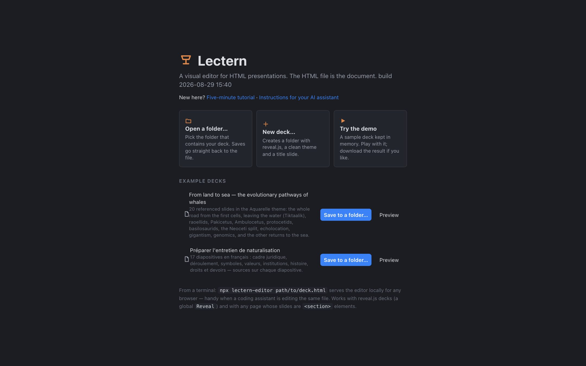
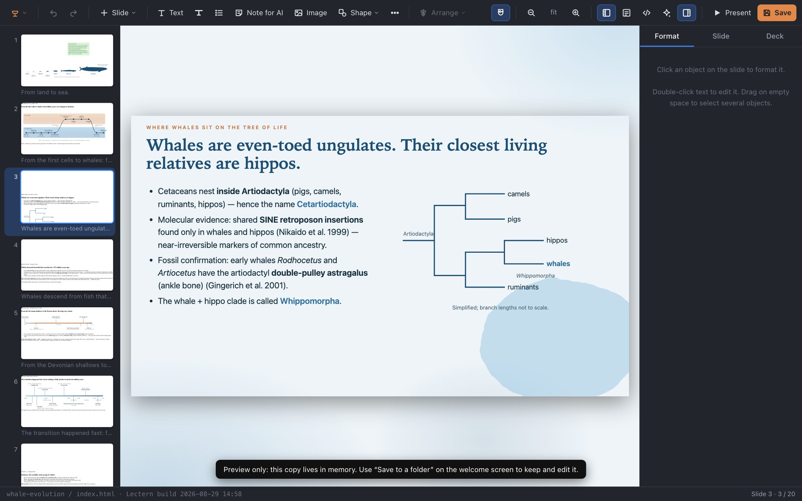
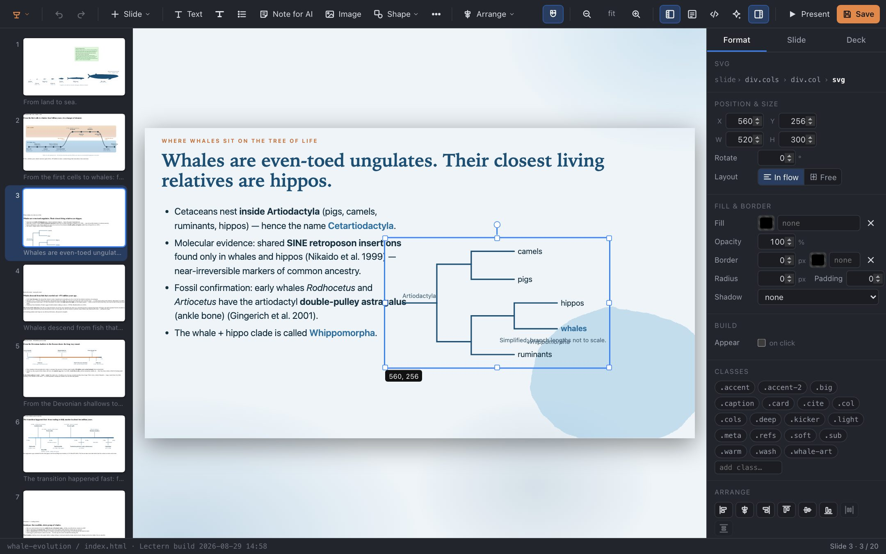
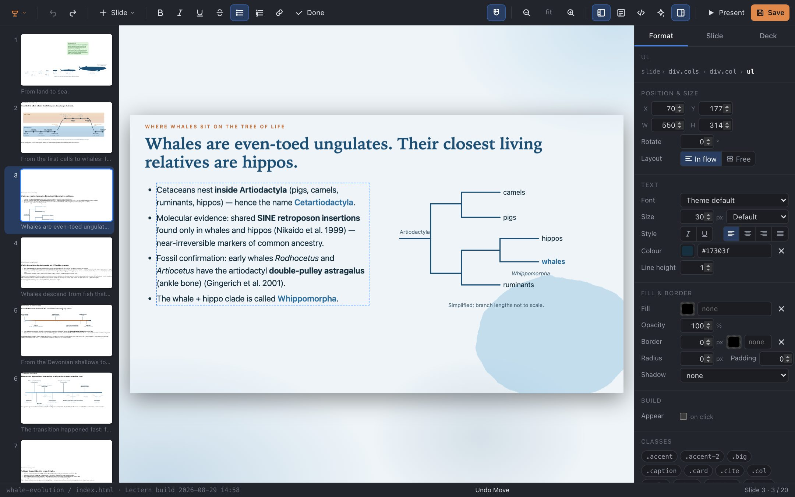
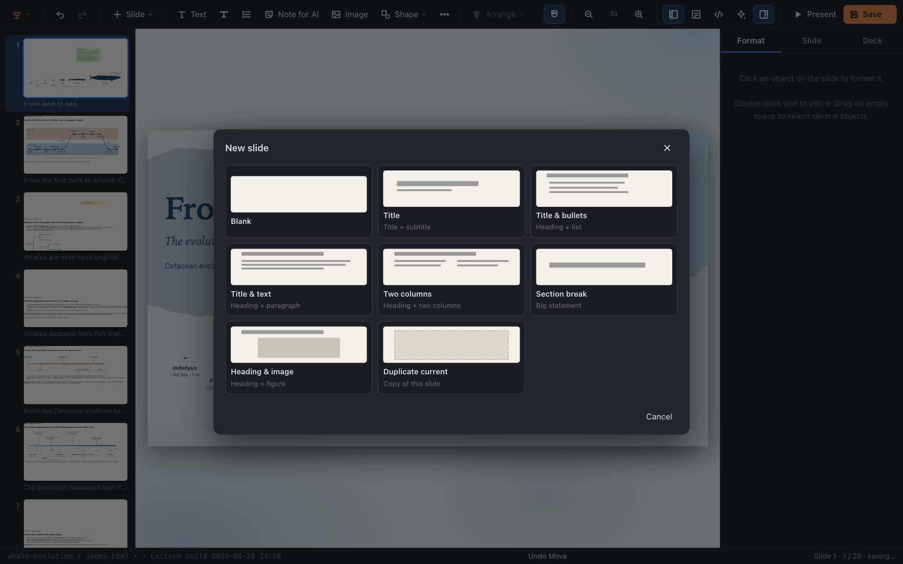
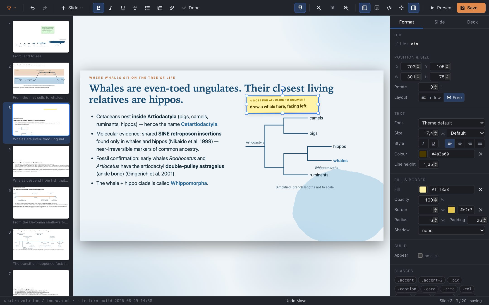
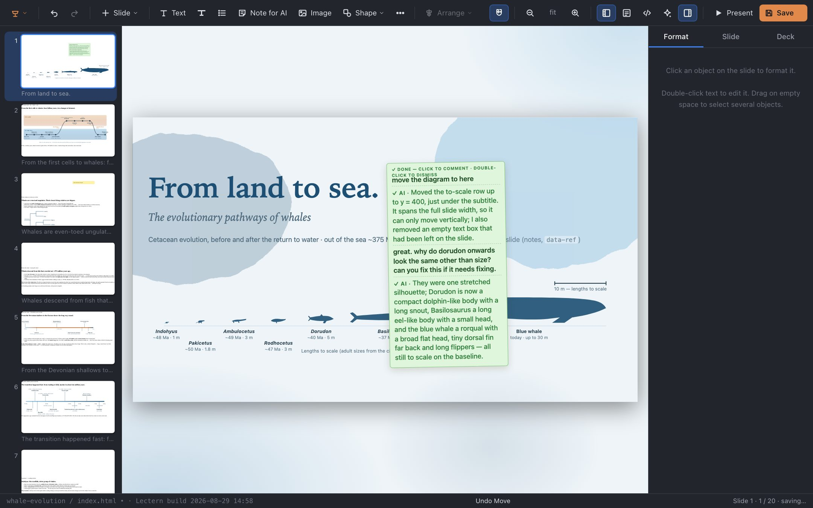

五分钟上手 Lectern
Lectern 像桌面演示软件那样编辑 HTML 幻灯片 —— 点击、拖动、输入 —— 并把结果直接写回 .html 文件。如果你用过 Keynote 或 PowerPoint，大部分操作都会很熟悉。本页讲剩下的部分，以及如何与 AI 智能体一起处理一份演示文稿。在另一个标签页打开编辑器，边看边做。
1 打开演示文稿
从欢迎页有三种进入方式。打开文件夹… 在Chrome或者Edge中选择存放演示文稿的文件夹（浏览器直接读写你磁盘上的文件，不会上传任何东西到互联网）。新建演示文稿… 创建一个包含标题幻灯片、主题和 reveal.js 副本的文件夹。示例上的 预览 会打开一个示例演示文稿的临时副本，这是是快速试用最快的方式；保存到文件夹 可以保存对示例的编辑。

在终端里，npx lectern-editor path/to/deck.html 可为任意浏览器（包括 Firefox 和 Safari）在本地提供编辑器。
2 界面
左侧是幻灯片列表，中间是当前幻灯片，右侧是检查器。幻灯片由演示文稿自带的 reveal.js 和样式表渲染，编辑时所见即观众所见。状态栏显示你正在编辑的文件；工具栏的 演示 会打开真正的演示。

3 选择与移动
单击 任意对象即可选中它 —— 标题、列表、图片、图表。会出现控制柄，检查器显示它的位置、大小、文本和填充。拖动 可移动它；参考线会吸附到幻灯片边缘、中心线以及其他对象的边缘（按住 ⌥ 可忽略吸附）。拖动控制柄可调整大小（图片保持比例；⇧ 可约束任意对象）。选区上方的小圆点用于旋转。方向键微移一个像素，⇧+方向键微移十个。

对象在幻灯片上有两种存在方式，在检查器里显示为 跟随布局 / 自由。由演示文稿 CSS 排版的文本保持在布局流中：拖动它只做微调，不会打乱其他内容。手动放置的对象 —— 图片、形状、说明文字 —— 是自由的，位于精确位置。用按钮在两者间切换。在空白画布上拖动可选择多个对象；⌘A 选中幻灯片上的全部；再次单击已选中的对象可选中它的父级（栏、卡片）。
4 编辑文本
双击 文本即可原地编辑，并全选以便直接重打；单击已选中的文本可把光标放到点击处。编辑时，拖动可选择部分文本，双击选中一个词，三击选中一段，⌫ 删除所选内容。工具栏会切换为加粗、斜体、下划线、列表和链接（⌘B ⌘I ⌘U ⌘K）；Tab 缩进列表项。Esc 或点击别处即结束编辑。选中文本对象后，直接输入即可替换其文本。以 LaTeX 书写的数学公式仍保持 LaTeX 源码，并在你结束时重新排版。

5 添加幻灯片与对象
工具栏的 幻灯片（或 ⌘⇧N）可从布局添加一张幻灯片 —— 标题、项目符号、双栏、章节分隔、图片 —— 由演示文稿自己的类构建，因此与其余部分风格一致。文本、图片 和 形状 会向当前幻灯片添加对象；图片会被复制到演示文稿文件夹。… 菜单里有表格、代码、公式和网页嵌入。⌘D 复制，⌫ 删除，⌘C/⌘V 复制与粘贴 —— 对象和幻灯片都一样。

6 保存与演示
⌘S 把改动过的幻灯片写回 HTML 文件，这个过程只会写改动过的部分，文件其余部分逐字节保持不变。自动保存默认开启（菜单 ▸ 自动保存），所以通常你无需按下它。⌘Z 可撤销任何操作，跨保存也有效。演示 会以观众看到的样子打开演示文稿；如果需要讲义，可在那里用 reveal 的 ?print-pdf 打印为 PDF。
因为文件本身就是文档，其他工具也能编辑它：文本编辑器、git，或 AI 智能体。如果在磁盘上的文件发生变化而你当时没有未保存的改动，画布会自动重新加载并停留在同一张幻灯片。
7 给 AI 的备注
这是新增的部分。在幻灯片上相关的位置右键（或双击空白画布），就地写下你想在那里完成的事：“在这里画一头鲸鱼，朝左”、“太密了 —— 拆成两页”、“把 1905 年的法律加在这里”。备注在画布上是一张 黄色便签，会连同它在幻灯片上的位置一起保存在 HTML 里（演示时隐藏）。

然后请你的智能体 处理这些备注。它会从文件中读取它们 —— npx lectern-editor notes deck.html 会列出它们，工具栏里的 AI 备注 面板会复制一段现成的提示词 —— 完成每条请求并标记为已完成。备注会变绿色，在你这句下方附上智能体的回复。单击绿色备注可回复它（它会重新变为待处理，并带上整个对话串）；满意后双击即可关闭。

要让智能体熟悉这套东西 —— 文件格式、演示文稿的类、备注协议 —— 把 AGENTS.md 给它。在 Claude Code 中安装技能：/plugin marketplace add calumhrmurray/lectern，然后 /plugin install lectern@lectern。其他智能体则粘贴：
Read https://calumhrmurray.github.io/lectern/AGENTS.md and make me a slide deck about … in a folder called talk.
然后让 Lectern 一直打开着那个文件夹。它的改动会即时出现；你的改动会在你操作后一秒内写入文件。
8 其他
- 检查器页签。 格式 针对选中的对象；幻灯片 有背景、过渡、演讲者备注和幻灯片的原始 HTML；演示文稿 有幻灯片尺寸和演示文稿的类。
- 类。 检查器底部的这些标签就是演示文稿自己的 CSS 类（
.kicker、.card、.soft…）。单击即可切换 —— 让新内容看起来和旧内容一致最省事的办法。 - 片段。 动画构建 ▸ 点击时出现 会把对象变成 reveal.js 片段；效果和顺序也在那里设置。
- 排列。 针对多选的对齐、分布和层级；⌘] / ⌘[ 上移一层 / 下移一层。
- 缩放。 + − 0，或用工具栏；PgUp/PgDn 切换幻灯片。
- 多文件演示文稿（从分片文件拉入幻灯片）会作为一份演示文稿编辑，并存回各自正确的文件。
- ? 显示完整的快捷键列表。